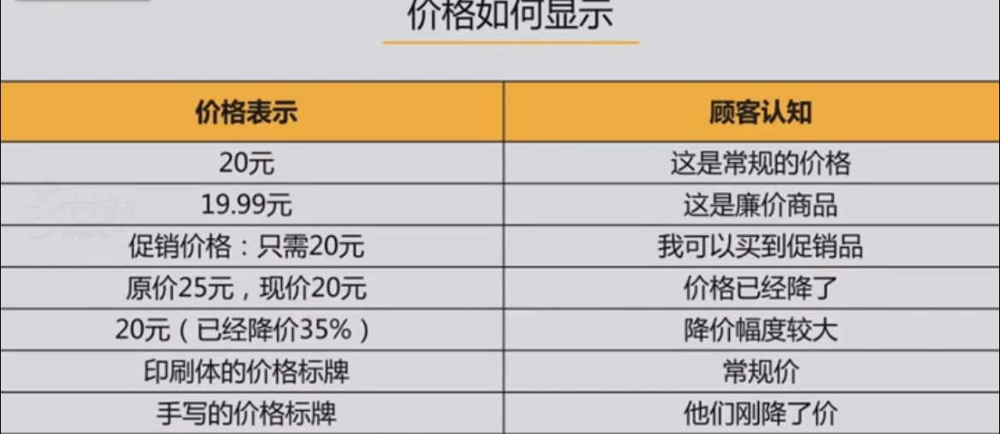
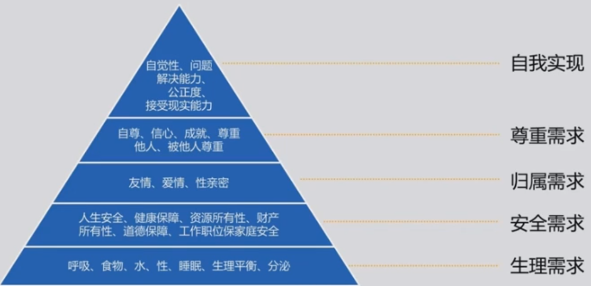
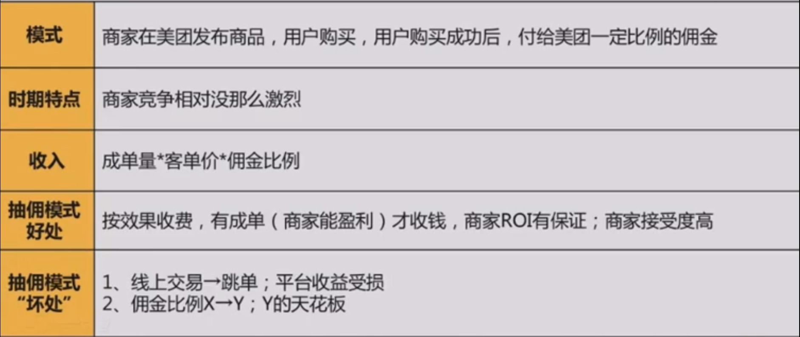

什么是商业产品经理？商业产品经理该如何修炼？商业化的启动和模式该如何选择？
什么是商业产品经理
商业产品经理是帮助公司发布，可销售给客户的，能进行收费的产品的人
商业产品经理=产品经理+Seller
商业产品经理的日常
举例
售前：
- 介绍信息：如何包装自己的产品
售中：
充值：怎么充值？在哪充值？支持什么充值？
享受特权：享受的特权有什么？
VIP协议：协议的内容要如何写能避免不必要的麻烦？
售后：
多人登录：要不要给多人登录？给多少个设备同时登录？什么情况会封号？
续费：什么时候提醒续费？续费定价规则
售前：
- 宣讲：找到目标用户群体的联系方式（地推、营销网站自主开户、其他）
售中：
销售CRM：销售线索的公海、私海，订单保护期
协助销售：展示demo
售后：
- 效果优化：如何提高ROI
小结
掌握产品售卖全链条的能力就是，掌握设计支撑整个售卖过程（包括售前、售中、售后）产品以及相关业务规则的能力
商业产品经理的修炼功法
产品定位：商业产品经理首先要清楚自己的产品定位，这帮我们想清楚产品向谁售卖以及产品如何包装
会讲故事：产品是销售给客户的，需要会“讲故事”打动客户
用户思维：在做商业化收入的同时还需要具有用户思维，才能有持续的可变现流量和更大的商业化价值
善用监控表：灵活运用监控表则可以帮我们及时了解业务推进情况和发展动态，发现问题
产品定位
产品定位是产品在客户心中的第一反应
清晰的产品定位有利于一句话表达清楚产品，明确出有别于其他产品的产品特色，圈定出适合的售卖客户群体
案例
腾讯广点通：高效实现您的营销目标
推广移动应用，推广本地生活服务，推广品牌活动，增加在线销量，获得潜在优质粉丝关注
百度本地直通车：本地生活服务移动营销解决方案
通过百度移动搜索推广与“手机百度”、“百度地图”、“百度糯米”三大应用推荐展示的方式，将商家信息精准地推广给周边有相应需求的客户，促使客户以在线支付、到店付等方式完成交易
百度移动搜索推广：搜索APP，一键下载
搜索结果页的推广结果直接显示APP下载按钮，一键点击即跳转到下载页面/应用商店详情页
产品定位需要回答的6个问题
以百度移动搜索推广为例
什么行业什么类型的产品：各行业的帮助APP类产品进行推广的产品
目标用户群/客户群是谁：APP类客户
解决用户/客户什么问题：转化链条过长
给用户/客户带来什么价值：提高ROI
跟竞争对手的差异化在哪：更多APP用户，更高下载率
如何匹配和强化产品和用户/客户：一句话表达清楚产品
会讲故事
案例
西游记的故事
百度神农项目
背景介绍：神农项目，就是在百度到的快照自然非付费结果中，陷入一些商业化模块，进而向客户收取一定费用。
小结
商业产品经理讲的故事不是去讲一个人物、时间、地点、事件的故事，而是从客户的角度去阐述产品优势，客户使用后带来的收益，解决客户的哪些痛点问题，进而激发客户去购买和使用
用户思维
用户就是媒体平台的使用者，商业产品虽然是为客户服务，但也不能忽略用户
案例

商业产品所需要的用户思维
了解用户在什么场景下会被打动
了解用户在媒体平台的行为路径
了解用户在不同客户行业产品转化的决策路径
商业产品中用户思维的利用
点击、转化、付费
提高用户互助热情，让用户不反感，让用户参与意愿更强
案例
用户思维挖掘的方法
- 马斯洛需求层次

- 人性法
好色、贪婪、懒惰······
- 大数据
小结
融合用户思维设计的商业产品，能更好的帮助客户增强品牌效果，获得更多潜在顾客
善用监控表
收入监控表：了解收入业绩的完成情况
客户监控表：帮助我们了解生意模式是否良性
收入完成进度表
分拆到货源维度
大分拆到客源来源维度
细粒度的项目管理表
小结
常用的客户维度监控表：
流失率：了解进来的客户有多少回不再购买业务
续费率：了解客户的复购情况
新开户、留存、流失对比：产品新引入客户的情况
客户数=新开+留存-流失，新开>流失才保证客户数是正增长的
指标的应用——客户维度
数据指标含义：
蓝线是每周的新进入客户数比较，是增长的，还是平稳的，还是下降的
紫线是每周新开户数的有消费比例是怎样变化的，理论上是平稳的，或者提升的，如果变低了则要研究一下
黄线是新客户进入的第四周，即月留存率
续费监控
- 续费率1：需要通过运营来留存，提醒充值，建立预警机制
收入预期
小结
好的监控表可以帮忙产品经理提早发现问题
商业化的启动时机和模式选择
有流量才能有收益，商业化的启动从我们能把用户留住开始
用户生命周期法
定量分析看平台的用户增长
用户新增率>用户流失率
用户留存率>40%
LTV（用户终身价值）>CPA（每获取一个用户的成本）（至少），LTV>3CPA（最好）
商业模式怎么选
案例
美团商业化步调
- 美团抽佣（CPS）

- Banner广告CPT售卖（CPT）
- COC竞价广告（CPC）
小结
先做和平台功能最相关的融合产品，从品牌到效果，给用户一个接受期
非自营商品的线上流水交易类平台，可以先从CPS商家抽佣开始
精心设计的CPT品牌广告，会让用户更能接受广告
用户对广告有一定接受度&有一定广告主资源基础后，CPC广告会是一个较长期的相对高效的商业化方式